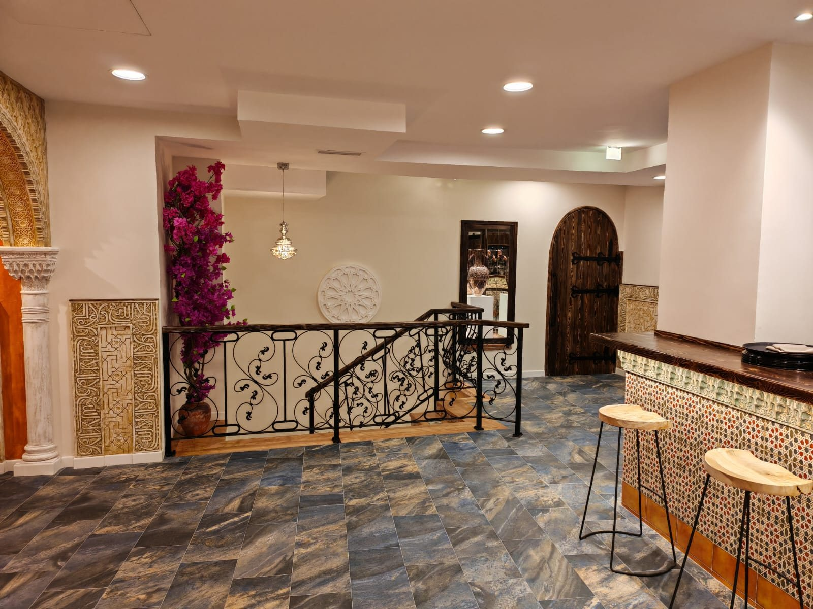
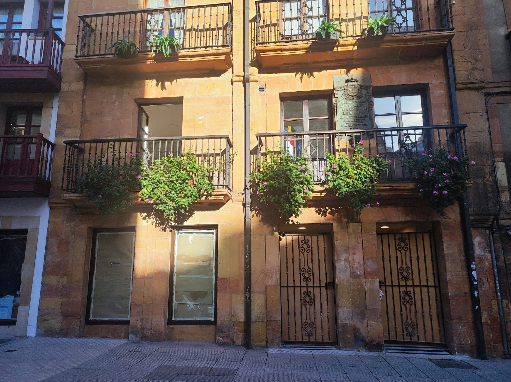
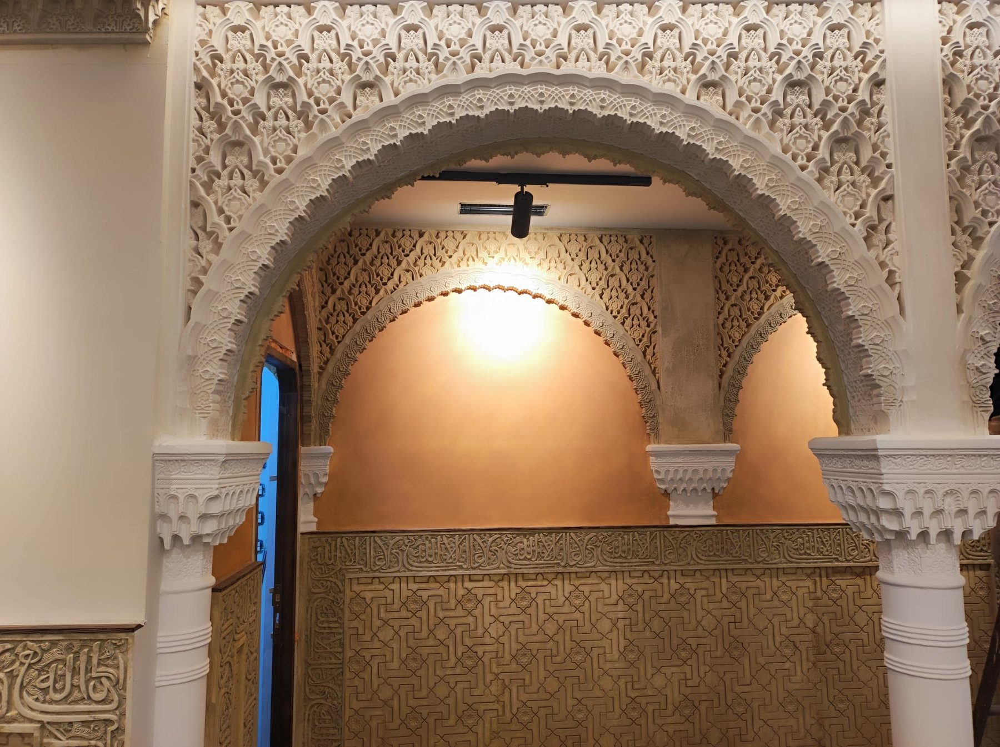
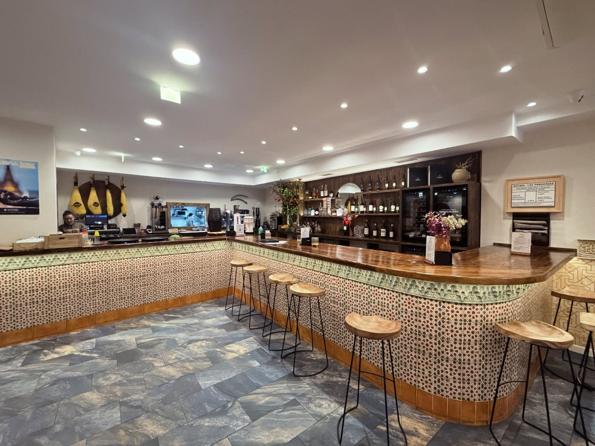
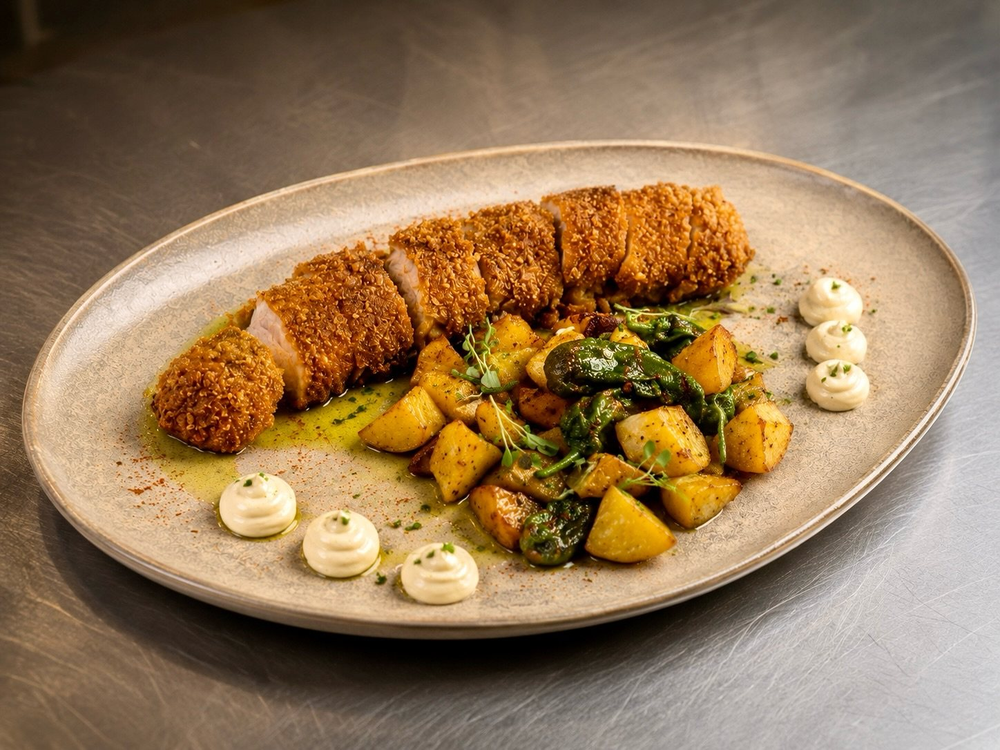
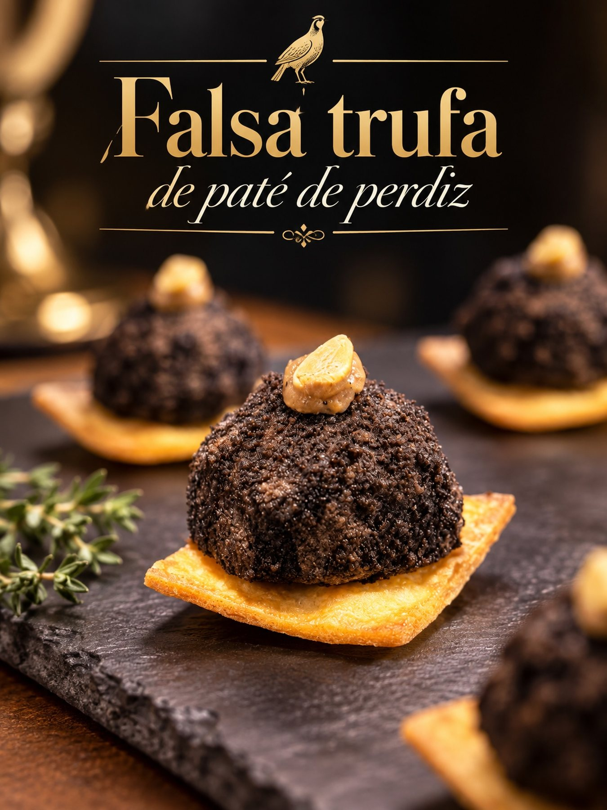
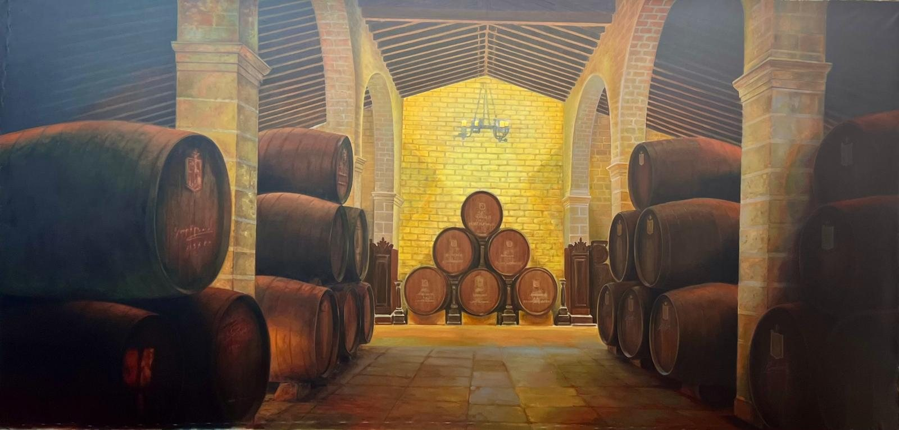
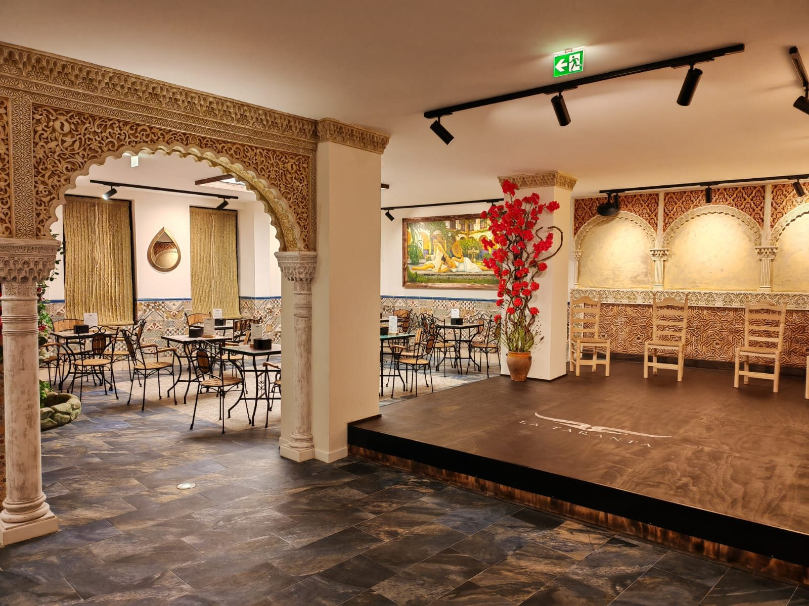

La visita, paso a paso
Una tarde en La Taranta
Del zaguán al tablao: así transcurre una visita a la casa. Nueve momentos que explican por qué esto no es solo un restaurante.
La llegada
La calle Rosal está a dos pasos del Fontán, en pleno casco antiguo. El edificio, con fachada de 1799, no anuncia nada desde fuera: la sorpresa empieza al cruzar la puerta.
Quien llega en coche encuentra aparcamiento público en el entorno del casco antiguo; quien llega paseando, llega desde cualquier punto del centro en menos de diez minutos.
Cómo llegar

El zaguán
Lo primero que se ve son los arcos. Las yeserías se reprodujeron con moldes tomados de arcos nazaríes de la Alhambra —sala de los Abencerrajes, Patio de los Leones, Palacio de Comares— y llevan el emblema nazarí en árabe.
No es escenografía de atrezo barato: es trabajo de taller, hecho pieza a pieza durante los tres años que duró la obra.
El patio
Azulejo, plantas, mesas de cerámica, una fuente y un tragaluz que deja entrar la claridad de Oviedo como si fuera la de un patio del sur. Es el sitio del desayuno, del mollete, del café con AOVE y del aperitivo sin prisa.
Ver El Patio

La carta
Salmorejo con berberecho y tierra de aceituna negra, anchoa con falsa aceituna de queso de oveja, croquetas de rabo de toro, pulpo a la parrilla, rodaballo a la brasa con sidra. El recetario del sur, con producto y técnica de hoy.
La cocina la dirige José Ignacio López, cocinero jienense de Torreperogil con dos Soles Repsol y premio al mejor salmorejo de Andalucía.
Ver la cartaEl menú degustación
La propuesta más ambiciosa de la casa: ocho pases, uno por cada provincia andaluza, y un homenaje final. Jaén abre con el aceite; Almería cierra con el dulce.
Es también la mejor manera de entender el proyecto en una sola sentada.
Las ocho provincias

El comedor
El Cortijo es el comedor principal: lámparas granadinas, tejas centenarias y un gran panorama pintado de olivar que recuerda de dónde viene todo esto.
Ver El CortijoEl ambiente
Luz cálida, música andaluza de fondo amortiguada por paneles acústicos, cerámica de La Alameda en la mesa y obra de gran formato del pintor cubano Euliser Polanco en las paredes: vistas de la Bodega del Rey y de la calle La Ciega de Jerez.


El flamenco
La casa tiene tablao propio, con su escenario, sus sillas de enea y su mirador de arcos al fondo. Las actuaciones se anuncian en el Instagram del restaurante.
El flamenco en La TarantaY si hay algo que celebrar
La Bodega funciona como sala aparte para comidas de empresa, cumpleaños, presentaciones y cenas privadas, con la posibilidad de cerrar la velada con flamenco.
Organizar un evento
“Sabores del sur que conquistan el norte” La Taranta · Instagram
Reserva tu mesa y descubre
Andalucía sin salir de Oviedo
Calle Rosal, 22-24 · Oviedo. Reserve por teléfono, por WhatsApp o desde el formulario.